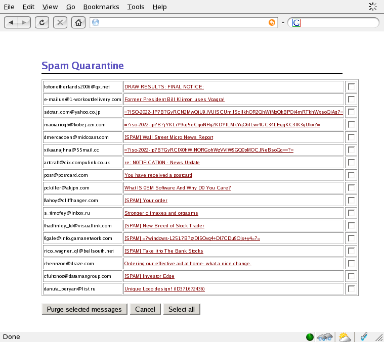
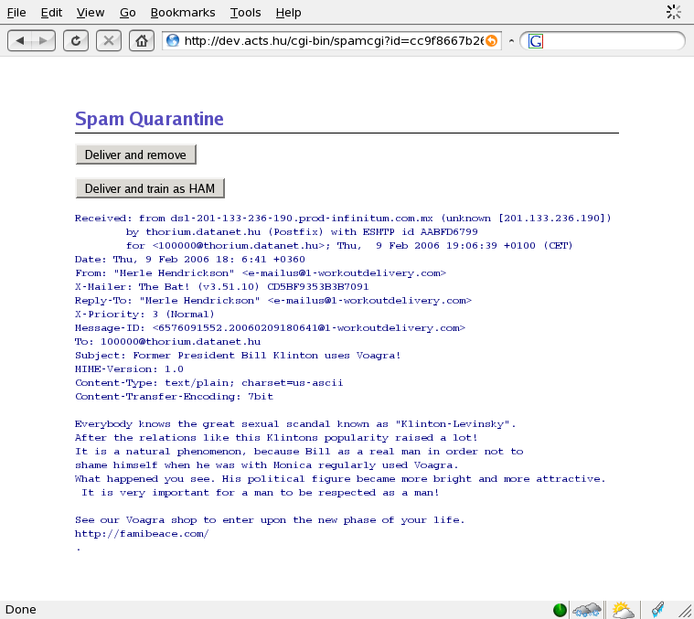
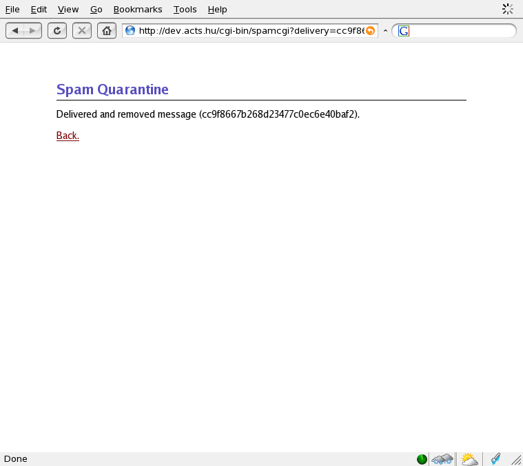
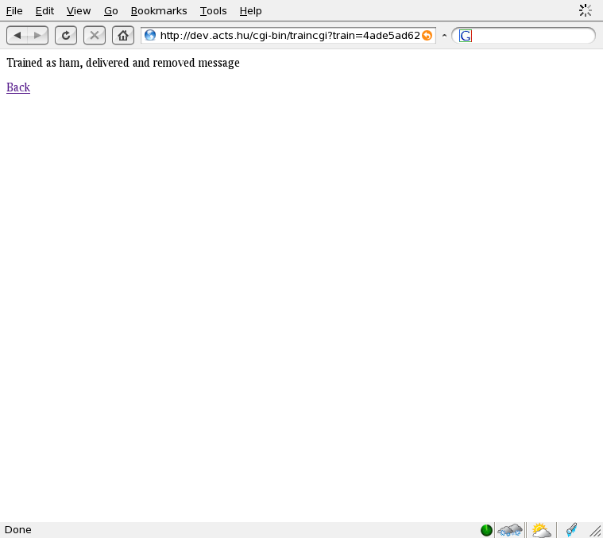

Spam Quarantine
Clapf is able to deliver spam into a quarantine so spam will not reach the users' mailboxes. Do the following to make the spam quarantine work:1. Create the cgi directory:
mkdir -p /var/www/cgi-bin/spamquarantine2. Put the cgi scripts there:
cp spamcgi /var/www/cgi-bin/spamquarantine cp traincgi /var/www/cgi-bin/spamquarantine3. Put access control on the cgi directory:
/var/www/cgi-bin/spamquarantine/.htaccess: AuthUserFile /var/www/cgi-bin/spamquarantine/.htpasswd AuthName "Spam quarantine" AuthType basic require valid-user /var/www/cgi-bin/spamquarantine/.htpasswd: username:<encryptedpassword>4. Set the spam quarantine related variables in clapf.conf:
relocate_delay=5 relocate_url=http://www.yourdomain.com/train/index.html spamcgi_url=http://www.yourdomain.com/cgi-bin/quarantine/spamcgi traincgi_url=http://www.yourdomain.com/cgi-bin/quarantine/traincgi5. (optional): Add LDAP or mysql support to enable users to deliver their spam to their own mailbox:
That's it! Users are able to use their spam quarantine. LDAP/MySQL is optional, you can still use the spam quarantine for viewing, deleting and training, only the delivery (from the spam quarantine) function is disabled.
And some screenshots at the end:
View of the spam quarantine:

Show the selected message:

Deliver the message to the recipient(s) and remove it:

Deliver the message to the recipient(s), train it as HAM and remove it:
